🏆 Nuestra misión
El 19 de julio de 2026 la Selección Española volvió a levantar la Copa Mundial de la FIFA.
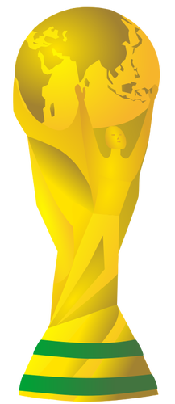
Después de vencer a Argentina en la final por 1-0 en la prórroga, España consiguió su segunda estrella mundialista. La primera había llegado en Sudáfrica en 2010. En 2026, una nueva generación de jugadores escribió otra página de la historia.
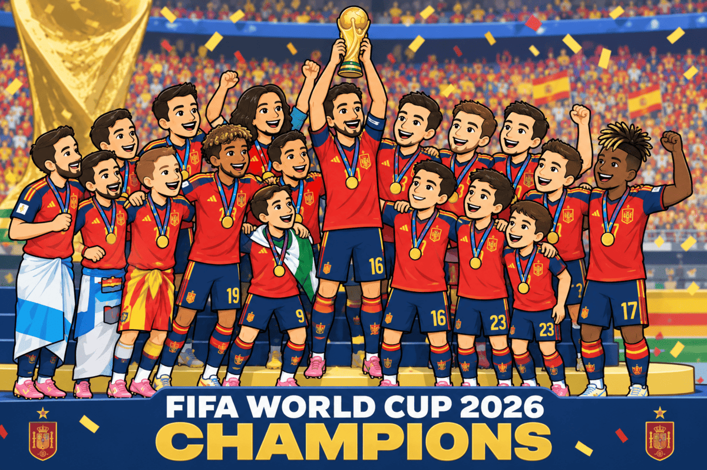
Pero para llegar hasta aquí no solo han sido importantes los jugadores.
También han sido importantes los datos, las distancias, los ángulos, las proporciones y las formas.
En otras palabras...
¡Las matemáticas también juegan al fútbol!
🍊 UN MENSAJE DEL PASADO
Para preparar este nuevo reto vamos a viajar también hasta 1982.
Aquel año España organizó el Mundial de Fútbol. La mascota del campeonato fue Naranjito, una naranja que vestía la camiseta de la Selección y que terminó convirtiéndose en un icono del Mundial español.
Han pasado 44 años.
En 1982, Naranjito acompañó a los aficionados.
En 2026, España ha vuelto a ser campeona del mundo (desde 2010 en Sudáfrica).
Ahora nos toca a nosotros unir ambos momentos.
🍊 Naranjito nos deja una misión:
«Si el fútbol está lleno de formas, distancias, ángulos y medidas... ¡demostrad que también puede jugarse con matemáticas!»
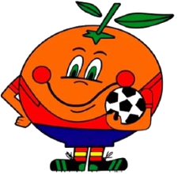
🎯 EL RETO
La Federación necesita preparar un Dossier Geométrico de la Selección Española.
Para conseguirlo tendremos que resolver problemas relacionados con:
- los triángulos;
- el teorema de Pitágoras;
- los movimientos;
- el teorema de Tales;
- la semejanza;
- los frisos y mosaicos;
- los perímetros;
- las áreas;
- los volúmenes;
- las figuras planas;
- los cuerpos geométricos.
Al final construiremos nuestra propia Guía Visual de Geometría, acompañada de una explicación con nuestra voz.
1. MOTIVAR - El campo también es matemático ⚽
📖 Antes de empezar
Imagina que eres miembro del equipo de análisis matemático de la Selección.
El cuerpo técnico necesita conocer las dimensiones del campo. Los diseñadores estudian el escudo y los elementos gráficos. Los encargados del estadio calculan superficies y los responsables de las instalaciones calculan volúmenes.
Todos necesitan utilizar matemáticas.
¿Cuánta geometría podemos encontrar en el mundo del fútbol?
Se muestran o comentan elementos de un campo de fútbol y se pide al alumnado que identifique figuras geométricas que reconozca:
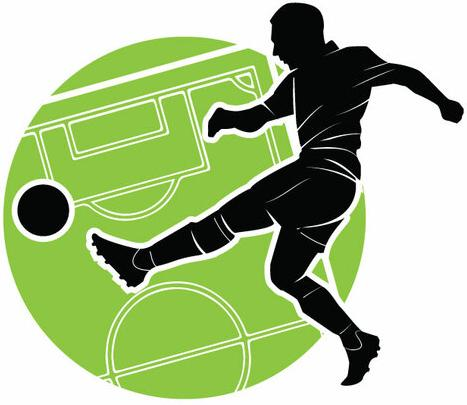
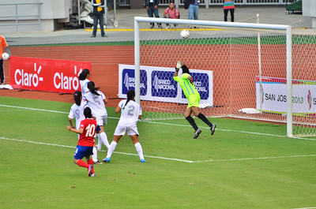
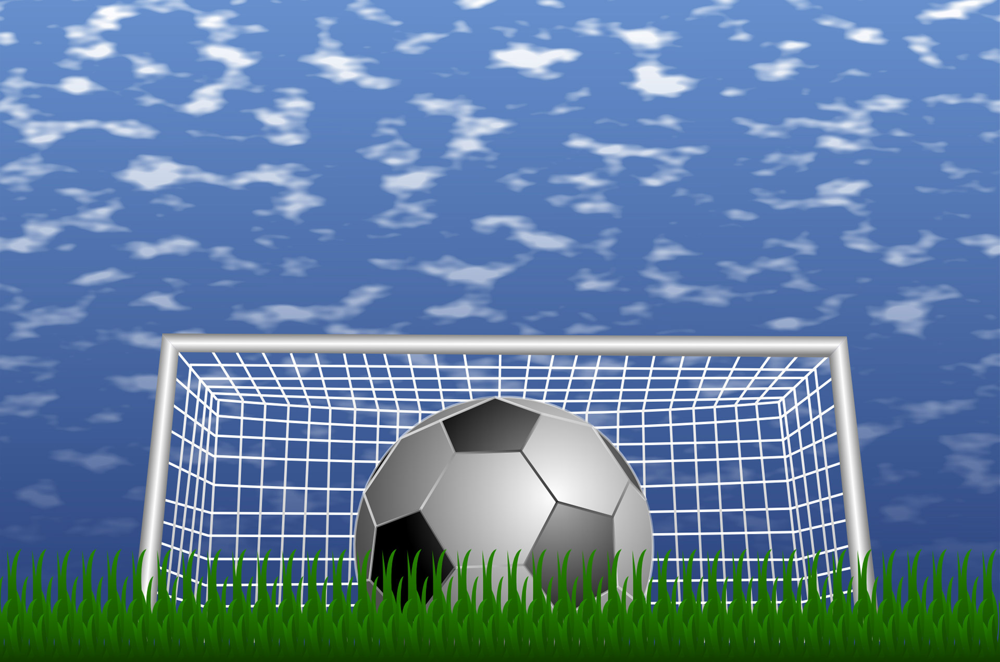
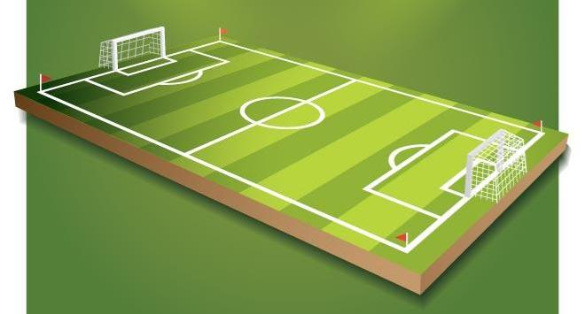
Objetivo: despertar la curiosidad y relacionar la geometría con un contexto conocido.
2. ACTIVAR - ¡Nos activamos geométrica y futbolísticamente!
🧠 Primer reto
Observa mentalmente un campo de fútbol.
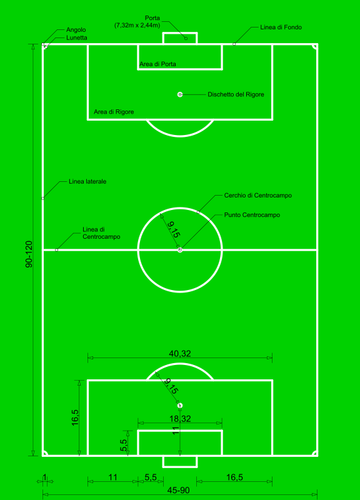
¿Qué figuras geométricas puedes encontrar?
Podemos encontrar:
- rectángulos;
- círculos;
- circunferencias;
- segmentos;
- puntos;
- ángulos.
Incluso podemos encontrar triángulos si dibujamos determinadas líneas sobre el campo.
💬 Piensa
Responde oralmente o en tu cuaderno:
1. ¿Qué figura tiene aproximadamente el campo?
→ Un rectángulo.
2. ¿Qué figura encontramos en el centro?
→ Una circunferencia.
3. ¿Qué podemos calcular de un campo?
→ Su perímetro y su área.
4. Si conocemos dos lados de un triángulo rectángulo, ¿qué podemos calcular?
→ Podemos utilizar el teorema de Pitágoras.
5. ¡Y ahora recordemos!
- ¿Qué es un lado?
- ¿A qué nos referimos con un vértice?, ¿y un ángulo?
- ¿Podrías diferencia el perímetro del área?, ¿qué son?
Objetivo: activar los conocimientos previos necesarios para comenzar la unidad.
3. EXPLORAR - ¡Exploramos la geometría del fútbol!
Ahora comienza la investigación matemática.
El profesor te va a plantear diferentes situaciones breves relacionadas con el campo y tú, como alumnado, deberás ayudarle a construir las posibles soluciones; preguntando tus dudas .
🔺 Situación 1. Los triángulos
Recordemos que podemos clasificar los triángulos:
- por sus lados: equilátero, isósceles y escaleno;
- por sus ángulos: acutángulo, rectángulo y obtusángulo.
Creemos un ejemplo sencillo de clasificación, para ello, describe cada tipo de triángulo de las dos clasificaciones con una frase y dibuja un representante de cada uno de ellos.
📐 Situación 2. Una diagonal del campo
Imaginemos un campo rectangular de 60 m de largo y 40 m de ancho.
Si trazamos una diagonal, aparece un triángulo rectángulo.
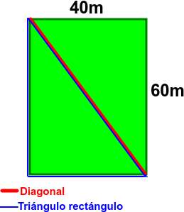
Podemos calcular la diagonal mediante el teorema de Pitágoras:\(d^2=60^2+40^2\)
\(d^2=3600+1600=5200\)
\(d=\sqrt{5200}\approx72,1\text{ m}\)
Por tanto, la diagonal mide aproximadamente 72,1 metros.
🔄 Situación 3. Movemos las figuras
Se presentan ejemplos relacionados con los movimientos geométricos:
- traslación: mover una figura;
- rotación: girarla;
- simetría axial: reflejarla respecto a un eje;
- simetría central: reflejarla respecto a un punto.
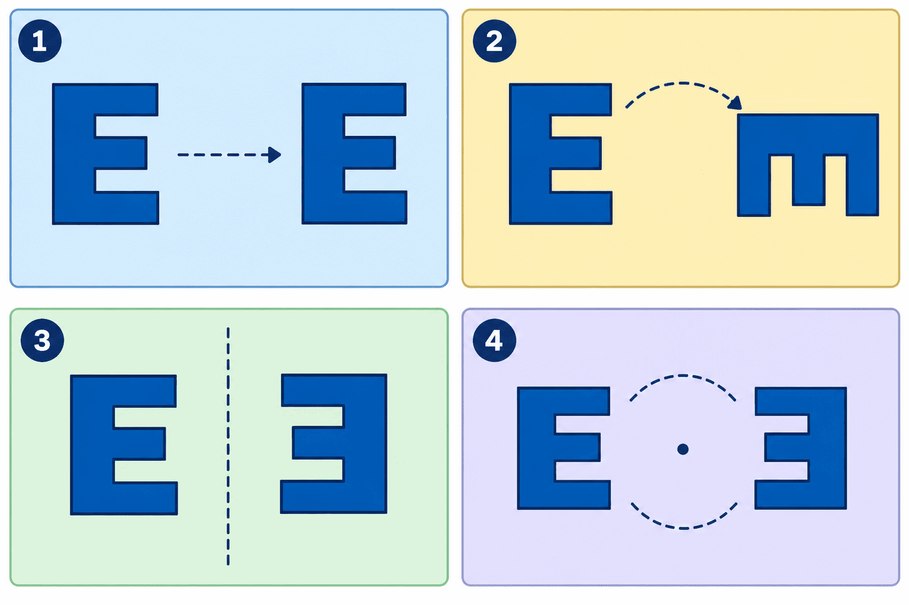
Como alumno/alumna debes identificar qué transformación se ha realizado en cada ejemplo.
📏 Situación 4. Medimos con Thales
Usando el teorema de Thales, que calcula la proporcionalidad entre segmentos, halla el valor de \(x\):
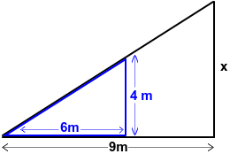
\(\dfrac{4}{6}=\dfrac{x}{9}\)Multiplicamos en cruz:
\(6x=36\)
\(x = \dfrac{36}{6}=6\)
Por tanto, \(x = 6\) m.
🔷 Situación 5. Figuras semejantes
Comparemos dos figuras con la misma forma pero distinto tamaño.
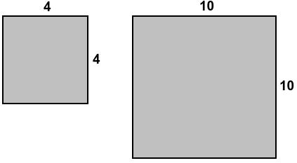
Si un lado mide 4 cm en la primera figura y 10 cm en la segunda:\(k=\frac{10}{4}=2'5\)
El factor de escala es \(2'5\).
🏟️ Situación 6. La geometría del estadio
Finalmente, se identifican otras figuras presentes en el fútbol:
- rectángulos en el campo;
- circunferencias en las líneas;
- triángulos en determinadas estructuras;
- prismas y cilindros en elementos del estadio.
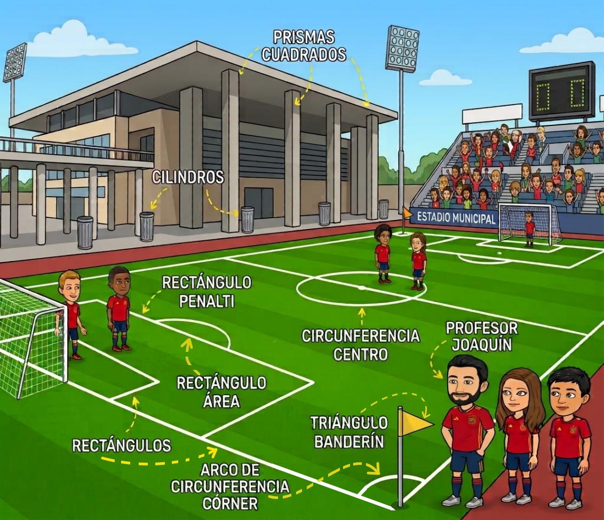
Se plantea una pregunta final:
¿Qué matemáticas hemos necesitado para analizar un campo de fútbol?
Como alumnado debes aportar tus ideas descubiertas durante la sesión.
🎯 Cierre de la sesión
Vamos a recoger las principales ideas en la pizarra:
TRIÁNGULOS → PITÁGORAS → TRANSFORMACIONES → THALES → SEMEJANZA → ÁREAS Y PERÍMETROS
Estas ideas serán la base para continuar explorando la geometría en las siguientes sesiones de clase.
Objetivo: realizar una primera exploración guiada de los contenidos que se desarrollarán posteriormente.
4. ESTRUCTURAR - ¡Primer tiempo!
⚽ BLOQUE 1. LOS TRIÁNGULOS DE LA SELECCIÓN
Imagina que sobre el terreno de juego dibujamos diferentes líneas que forman triángulos.
Según sus lados:
- Equilátero: tres lados iguales.
- Isósceles: dos lados iguales.
- Escaleno: tres lados diferentes.
Según sus ángulos:
- Acutángulo: todos sus ángulos son menores de 90°.
- Rectángulo: tiene un ángulo de 90°.
- Obtusángulo: tiene un ángulo mayor de 90°.
📝 Ejemplo de análisis
En una jugada aparecen tres segmentos de:
\(6\,m,\quad6\,m,\quad4\,m\)
Como dos lados son iguales:
\(6=6\)
el triángulo es isósceles.
⚽ BLOQUE 2. UNA DIAGONAL SOBRE EL CAMPO
Los analistas quieren conocer la distancia entre dos puntos del campo.
Tenemos un triángulo rectángulo cuyos catetos miden:
6 m y 8 m.
¿Cuánto mide la diagonal?
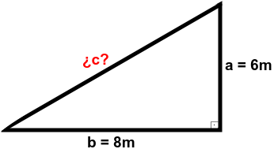
Utilizamos Pitágoras:\(a^2+b^2=c^2\)
\(6^2+8^2=c^2\)
\(36+64=c^2\)
\(100=c^2\)
\(c=\sqrt{100}=10\)
🏆 Resultado \(\boxed{10\,m}\)
La diagonal mide 10 metros.
⚽ BLOQUE 3. LOS MOVIMIENTOS DEL BALÓN
Una jugada puede ayudarnos a comprender los movimientos geométricos.
➡️ Traslación
El balón cambia de posición manteniendo su orientación.
Trasladar = desplazar.
🔄 Giro
El balón o una figura gira alrededor de un punto.
Girar = rotar.
■ Simetría axial
Una figura se refleja respecto a una recta.
Es como mirarse en un espejo.
🎯 Simetría central
Una figura se transforma mediante un giro de:
\(180^\circ\) alrededor de un punto.
📝 Actividad resuelta
Identifica el movimiento.
a) Una figura se desplaza 5 metros hacia la derecha.
→ Traslación.
b) Una figura rota \(90^\circ\).
→ Giro.
c) Una figura aparece reflejada respecto a una línea.
→ Simetría axial.
d) Una figura gira \(180^\circ\) alrededor de un punto.
→ Simetría central.
⚽ BLOQUE 4. TALES: ¿A QUÉ DISTANCIA ESTÁ?
Los analistas quieren calcular una distancia que no pueden medir directamente.
Utilizan triángulos semejantes y el teorema de Tales.
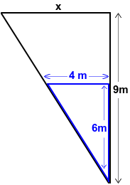
Supongamos:\(\dfrac{4}{6}=\dfrac{x}{9}\)
Multiplicamos en cruz:
\(4\cdot9=6x\)
\(36=6x\)
\(x=6\)
🏆 Resultado
\(\boxed{x=6} \)
⚽ BLOQUE 5. TRIÁNGULOS SEMEJANTES
Imagina dos campos dibujados a diferentes escalas.
- Uno es pequeño.
- Otro es grande.
Pero ambos mantienen la misma forma.
Son figuras semejantes.
La razón de semejanza es:
\(k=\dfrac{\text{medida nueva}}{\text{medida original}}\)
📝 Ejemplo
Una línea del campo mide 4 m en un dibujo.
En otro dibujo semejante mide 12 m.
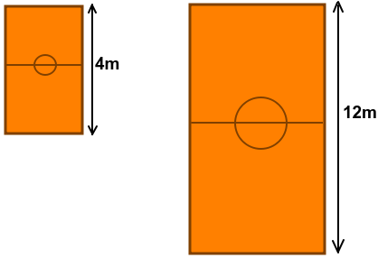
\(k=\dfrac{12}{4}=3\)Por tanto:
\(\boxed{k=3}\)
El segundo dibujo es 3 veces mayor.
🍊 BLOQUE 6. EL RETO DE NARANJITO
Naranjito ha encontrado dos dibujos de un campo.
El pequeño tiene una portería cuya longitud representada es: \(3\,cm\)
En el dibujo grande la misma portería mide: \(6\,cm\)
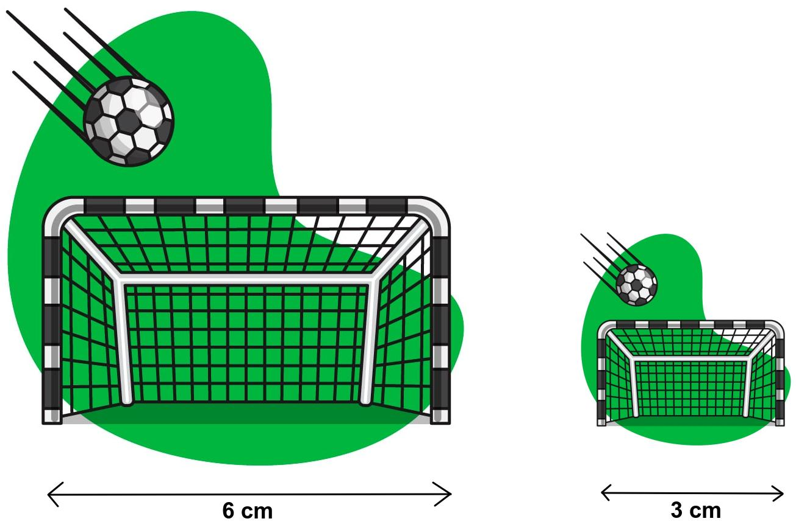
¿Cuál es la razón de semejanza?
\(k=\dfrac{6}{3}=2\)
🍊 Resultado: \(\boxed{k=2}\) El segundo dibujo es el doble de grande.
⚽ BLOQUE 7. FRISOS Y MOSAICOS EN LAS GRADAS
Mira una grada de un estadio.
Podemos encontrar patrones que se repiten:
Eso es un patrón.
Un friso repite un motivo siguiendo una dirección.
Un mosaico utiliza figuras que encajan para cubrir una superficie sin dejar huecos.
📝 Ejemplo
Un diseño utiliza:
▲ ■ ▲ ■ ▲ ■
El patrón que se repite es:
\(\boxed{\text{triángulo – cuadrado}}\)
⚽ BLOQUE 8. ¿CUÁNTO MIDE EL CAMPO?
Supongamos que un campo rectangular mide:
\(105\,m\)
de largo y:
\(68\,m\)
de ancho.
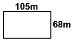
Perímetro\(P=2\cdot105+2\cdot68\)
\(P=210+136\)
\(\boxed{P=346\,m}\)
Área
\(A=105\cdot68\)
\(\boxed{A=7140\,m^2}\)
El campo tiene una superficie de 7140 m².
⚽ BLOQUE 9. EL ENTRENAMIENTO DE LAS FIGURAS PLANAS
Durante el entrenamiento aparecen muchas formas geométricas.
Triángulo
\(A=\dfrac{b\cdot h}{2}\)
Ejemplo:
\(b=8,\quad h=5\)
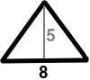
\(A=\dfrac{8\cdot5}{2}=20\)
\(\boxed{20\,cm^2}\)
Cuadrado
\(P=4l\)
\(A=l^2\)
Si:
\(l=6\,cm\)
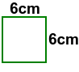
entonces:
\(P= 4·6=24\,cm\)
\(A=6^2=36\,cm^2\)
Rectángulo
\(P=2b+2h\)
\(A=b\cdot h\)
Si mide 8 cm × 3 cm:
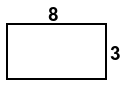
\(P= 2·8 + 2·3 =22\,cm\)
\(A= 3·8=24 \,cm^2 \)
Rombo
\(P=4l\)
\(A=\dfrac{D\cdot d}{2}\)
Si:
\(D=10,\quad d=6\)
entonces:
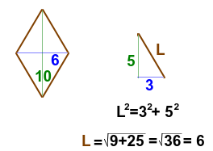
\(P=4·6=24\)\(A=\dfrac{10\cdot6}{2}\)
\(\boxed{A=30\,cm^2} \)
Romboide
\(P=2a+2b\)
\(A=b\cdot h\)
Si:
\(b=8,\quad h=4\)
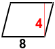
\(A=8\cdot4\= \boxed{32\,cm^2}\)Trapecio
\(A=\frac{(B+b)\cdot h}{2}\)
Si:
\(B=10,\quad b=6,\quad h=4\)
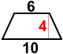
\(A=\dfrac{(10+6)\cdot4}{2} = \boxed{32\,cm^2} \)
⚽ BLOQUE 10. EL CÍRCULO CENTRAL
El centro del campo nos recuerda que también necesitamos trabajar con circunferencias y círculos.
Longitud de la circunferencia
\(L=2\pi r\)
Área del círculo
\(A=\pi r^2\)
📝 Ejemplo
El radio es:
\(r=5\,m\)
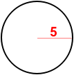
Longitud:
\(L=2\pi\cdot5\)
\(L=10\pi\approx31'42\,m\)
Área:
\(A=\pi\cdot5^2\)
\(A=25\pi\approx78'54\,m^2\)
⚽ BLOQUE 11. LOS ESCUDOS Y LOS POLÍGONOS
En los diseños deportivos podemos encontrar polígonos.
Un polígono regular tiene todos sus lados iguales.
Para calcular su perímetro:
\(P=n\cdot l\)
Y su área:
\(A=\dfrac{P\cdot a}{2}\)
donde \(a\) es la apotema.
📝 Pentágono
Tiene 5 lados.
Si cada lado mide 4 cm:
\(P=5\cdot4=20\,cm\)
Si su apotema mide 2'75 cm:
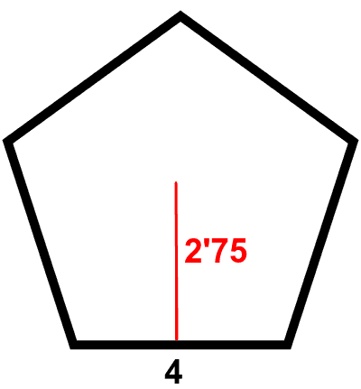
\(A=\dfrac{20\cdot2'75}{2}\)\(\boxed{A=27'5\,cm^2}\)
📝 Hexágono
Tiene 6 lados.
Si cada lado mide 5 cm:
\(P=6\cdot5=30\,cm\)
Si su apotema mide 4'33 cm:
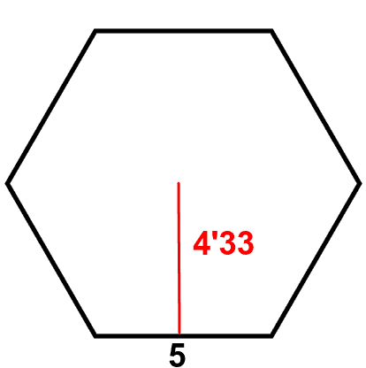
\(A=\dfrac{30\cdot4,33}{2}\)\(\boxed{A=64'95\,cm^2}\)
🏟️ BLOQUE 12. EL ESTADIO EN TRES DIMENSIONES
Ahora dejamos el campo y entramos en el estadio.
Aquí aparecen cuerpos geométricos.
Prisma
\(V=A_b\cdot h\)
Una caja tiene una base de:
\(8\times5=40\,cm^2\)
y una altura de 10 cm.
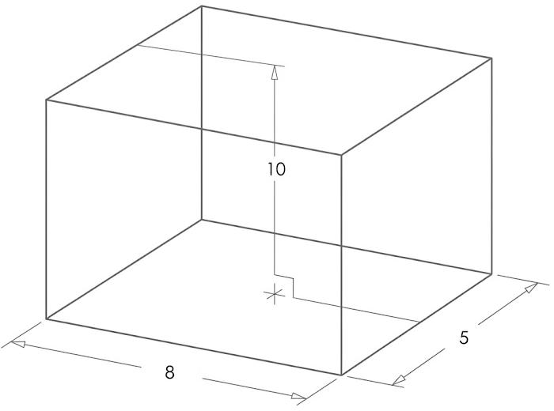
\(V=40\cdot10\)\(\boxed{V=400\,cm^3}\)
Pirámide
\(V=\dfrac{A_b\cdot h}{3}\)
Si:
\(A_b=36\,cm^2\)
y:
\(h=10\,cm\)
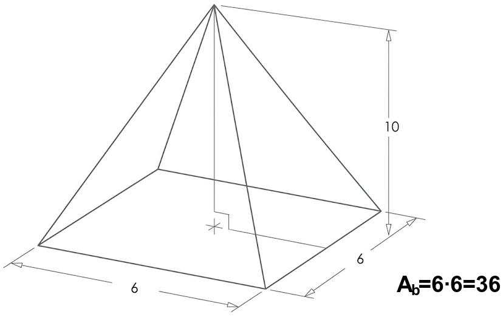
entonces:
\(V=\frac{36\cdot10}{3}\)
\(\boxed{V=120\,cm^3}\)
🏟️ BLOQUE 13. LAS FIGURAS DE REVOLUCIÓN
En un estadio también podemos encontrar objetos con forma de cilindro, cono o esfera.
Cilindro
\(V=\pi r^2h\)
Si:
\(r=3,\quad h=8\)
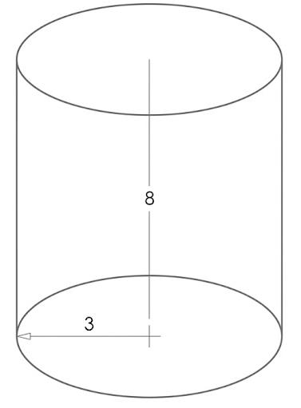
\(V=72\pi\)
\(\boxed{V\approx226'19\,cm^3}\)
Cono
\(V=\frac{\pi r^2h}{3}\)
Con:
\(r=3,\quad h=8\)
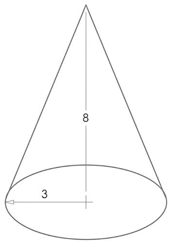
\(V=24\pi\)
\(\boxed{V\approx75'40\,cm^3}\)
Esfera
\(V=\frac43\pi r^3\)
Si:
\(r=3\)
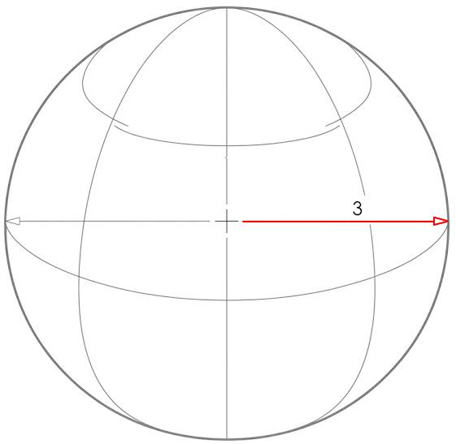
\(V=36\pi\)
\(\boxed{V\approx113'10\,cm^3}\)
5. APLICAR - ¡Segundo tiempo!
🏆 RETO 1. EL SIMULACRO DE LA CAMPEONA
Ha llegado el momento de comprobar si estás preparado para enfrentarte a los problemas de geometría.
Realizarás un simulacro individual.
En los problemas recuerda:
⚽ LEE → IDENTIFICA → ELIGE → CALCULA → COMPRUEBA
No tengas prisa.
Un buen analista no calcula sin pensar.
🎮 RETO 2. EL PARTIDO MATEMÁTICO
Ahora tendrás que enfrentarte a un reto gamificado matemático basado en los contenidos de la situación.
Deberás demostrar que sabes utilizar:
- figuras;
- medidas;
- proporciones;
- áreas;
- perímetros;
- volúmenes;
- semejanza;
- Pitágoras.
Como en un partido:
No basta con conocer las reglas. Hay que saber utilizarlas en el momento adecuado.
🍊 RETO 3. EL DOSSIER GEOMÉTRICO DE NARANJITO
Ha llegado el momento de preparar la guía que quedará como recuerdo de esta aventura.
Crearás una infografía resumen de geometría.
Tu infografía debe incluir:
- ⚽ Triángulos
- clasificación;
- Pitágoras.
- clasificación;
- 🔄 2. Movimientos
- traslación;
- giro;
- simetría axial;
- simetría central.
- traslación;
- 📏 Tales y semejanza
- Tales;
- razón de semejanza;
- criterios de semejanza.
- Tales;
- 📐 Figuras planas
- perímetros;
- áreas.
- perímetros;
- 🏟️ Cuerpos geométricos
- prismas;
- pirámides;
- cilindros;
- conos;
- esferas.
- prismas;
- 🔷 Frisos y mosaicos
- Incluye algún ejemplo.
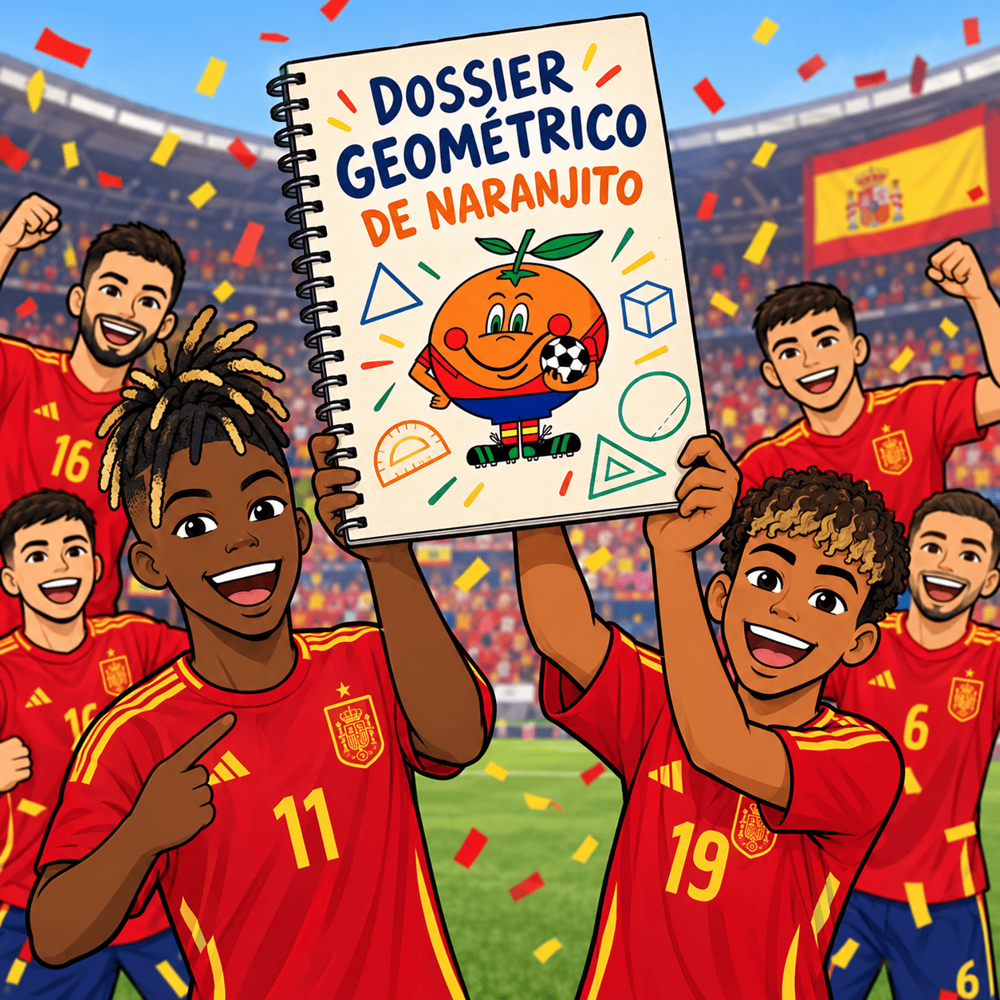
🎙️ LA EXPLICACIÓN DEL ANALISTA
La infografía debe ir acompañada de una audiodescripción realizada con tu propia voz.
Puedes entregarla como:
- vídeo (no tienes por qué aparecer en él, pero sí oírse claramente tu voz);
- audio acompañado de la infografía.
Explica qué aparece en tu trabajo y demuestra que entiendes las fórmulas.
Como idea (no es obligatorio), puedes empezar diciendo:
«Bienvenidos al Dossier Geométrico de la Selección. En esta infografía he resumido los contenidos de geometría que hemos trabajado...»
Después explicarás los apartados más importantes.
No tienes que leer simplemente la infografía.
Tienes que explicarla.
6. CONCLUIR/EVALUAR – ¡Final de partido!
🏆 LA ÚLTIMA PRUEBA
Hemos llegado al final de nuestro campeonato.
Durante esta situación hemos aprendido que las matemáticas pueden aparecer en:
⚽ un campo de fútbol;
📐 una jugada;
📏 una distancia;
🔄 un movimiento;
🔺 un triángulo;
🏟️ un estadio;
🍊 una mascota de otro Mundial;
🔷 un mosaico;
📦 un cuerpo geométrico.
Ahora toca demostrar lo aprendido.
📝 EXAMEN
Realizarás una prueba individual sobre los contenidos trabajados.
Tendrás que resolver problemas relacionados con:
- triángulos;
- Pitágoras;
- movimientos;
- Tales;
- semejanza;
- perímetros;
- áreas;
- volúmenes.
🎨 ENTREGA DEL DOSSIER
También entregarás tu:
Infografía-resumen + audiodescripción
(Infografía resumen con un vídeo o un audio, explicándola, no leyéndola; no tienes que salir en el vídeo, pero si se debe oír claramente tu voz).
Antes de entregarla, comprueba:
- ☐ He incluido los contenidos principales.
- ☐ Las fórmulas son correctas.
- ☐ Los ejemplos están bien resueltos.
- ☐ He utilizado unidades.
- ☐ La información se entiende.
- ☐ La infografía está ordenada.
- ☐ He explicado el contenido con mi propia voz.
- ☐ He revisado mi trabajo.
⭐ EL SILBATO FINAL
El fútbol y la geometría tienen algo en común:
hay que observar antes de actuar.
Un jugador observa el campo y decide qué hacer.
Un matemático observa el problema y decide qué herramienta utilizar.
Por eso, cuando tengas un problema de geometría delante:
1. 👀 OBSERVA
¿Qué figura tengo?
2. 📖 LEE
¿Qué me están preguntando?
3. 📏 IDENTIFICA
¿Qué datos conozco?
4. 🧠 PIENSA
¿Qué fórmula necesito?
5. ✏️ CALCULA
Haz las operaciones paso a paso.
6. 🔎 COMPRUEBA
¿Tiene sentido el resultado?
7. 🏆 RESPONDE
Escribe la solución con sus unidades.
🍊 De Naranjito a la segunda estrella
En 1982, Naranjito acompañó al Mundial celebrado en España.
En 2010, en Sudáfrica, "la roja" levantó por primera vez la Copa del Mundo.
En 2026, España volvió a levantar la Copa del Mundo.
Ahora tienes tu propio recuerdo de este viaje:
una guía matemática de la geometría que también estaba escondida dentro del fútbol.
⚽ + 📐 = 🧠
La geometría también juega.
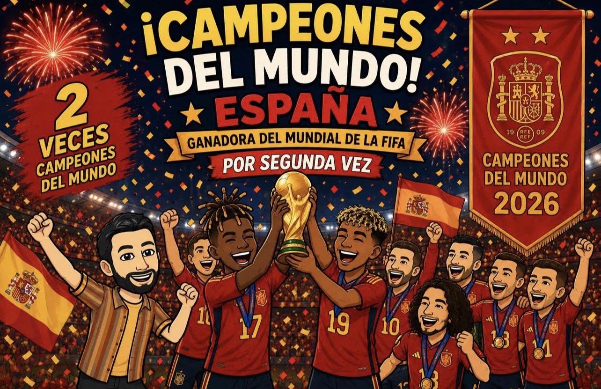